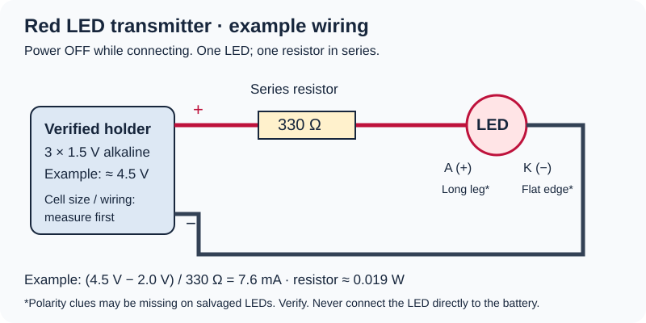

V5 · Camera + Standalone Engineering Lab
RED BEAM
Your iPhone camera becomes the receiver. Block the light to trigger a silent on-screen alert.
Keep the phone still. Tap directly on the glowing spot in the picture to place the target. Then press Arm once. No tapping when it is blocked.
Hold your light steady and tap ARM. The app will detect interruptions automatically.
Advanced: manual two-point calibration (optional)
Only use this advanced method if one-tap automatic detection doesn't distinguish light from darkness reliably.
Silent. Camera images stay on this device and are not saved. Test summaries can be saved below.
Range & reliability test
Start while armed and the beam is detected. Choose ten or thirty crossings. Cross that many times without touching the phone; then confirm below. Leave the beam clear for the timed stationary test.
NOT TESTED · No distance has passed yet.
0 of 6 distances passed for this source and lighting.
Results save locally in this browser. Download them before clearing website data.
Electrical Engineering Control Center
See what is confirmed, still unverified or missing for all nine McGruber builds, and log real measurements with your Fluke.
Hardware progress — build without the phone
Current state: Your owner-reported phone-based red beam tests reach nominal 15 ft. The LED-to-LED receiver and automatic transistor switching are separate experiments; neither proves a complete phone-free tripwire yet.
Use our hardware lab for 9 guided stages, 9V + resistor wiring, DC mV receiver measurements, pinout checks, solder-free 2N4401 tests, blocked circuit requirements, and locally saved results.
Build the transmitter
First prove the app with the intact HyperGear flashlight. For a bare red LED, verify the holder and resistor before connecting power.

Example only: measured supply about 4.5 V, resistor 330 Ω, red LED about 2 V gives roughly 7.6 mA. Unknown LED ratings and holder wiring still need verification.
- Use your HyperGear in White flashlight mode first, or use a properly powered red LED in Red mode.
- Open directly in Safari, tap Start camera, and hold the phone stationary.
- Start 6–12 inches away. Tap the bright spot in the preview to position the target circle.
- With the light shining, tap ARM AUTOMATIC DETECTION just once and keep it on while the app measures it.
- Without pressing another button, cover and uncover the light. The detector and counter should respond automatically. Then increase the distance gradually.
Camera troubleshooting & advanced options
Wrong camera? Use front-camera button or select a specific camera below. Black video? Close other camera apps, tap Stop, reload the page in Safari and try again. Jumping readings? Keep the phone still, tap the LED precisely, block other red lights and recalibrate. iOS adjusts exposure automatically.
Camera diagnostics appear here.
© McGruber Lab · Phone-only optical experiment
Camera frames are analyzed only on this device; never sent or saved.